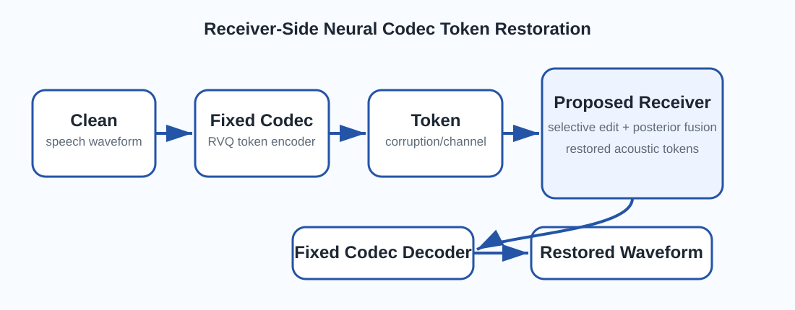
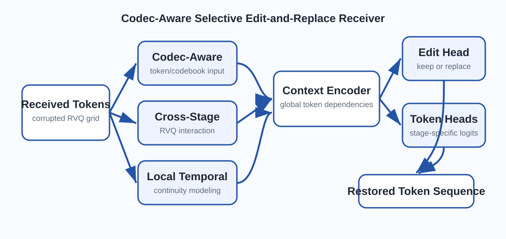
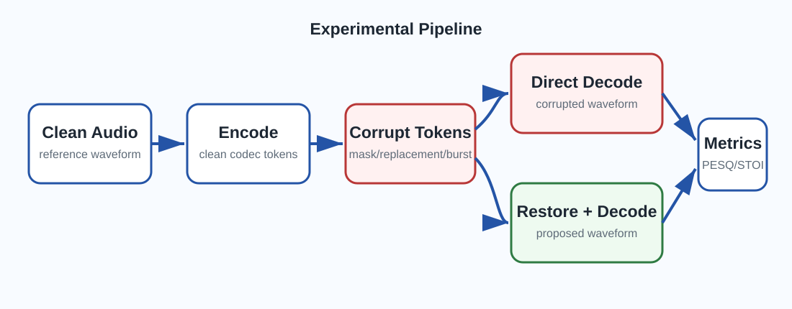

Codec-Aware Input
Token indices are combined with RVQ-stage embeddings and frozen codec-codebook features.
Speech Restoration Demo
Contact: Zewei Wang (zwwong at link.cuhk.edu.hk)
Neural audio codecs represent speech as compact residual vector quantization (RVQ) token streams, but token-level corruption can severely degrade the final decoded waveform. This work studies a strict receiver-side restoration setting where the transmitter, channel protection strategy, codec encoder, and codec decoder are fixed. Only an add-on token restoration module is learned at the receiver.
We propose a codebook-assisted selective token denoising framework with channel-likelihood posterior fusion. The model learns both an edit policy and a replacement-token distribution from corrupted codec-token context. It uses codec-codebook representations, cross-stage interaction, local temporal modeling, stage-specific token prediction heads, and codec-aware codebook-vector supervision. For structured bit-error replacement, the receiver further computes analytical channel likelihoods and fuses them with neural token logits, so the final decision is guided by both acoustic-token context and channel-law consistency.

The proposed framework operates after channel decoding and before fixed neural codec decoding. It does not modify the original transmitter or the codec. Instead, it repairs the received acoustic-token sequence and then reconstructs waveform audio using the unchanged neural codec decoder.
The clean speech waveform is encoded into RVQ codec tokens. After transmission, the receiver obtains a corrupted token sequence. Directly decoding this sequence may produce severe artifacts because token errors move the decoder to incorrect codebook vectors. The proposed module inserts a receiver-side token denoiser between channel decoding and codec decoding.
Instead of regenerating all tokens, the receiver estimates whether each token should be preserved or repaired. Reliable tokens are kept, while suspicious tokens are selectively replaced. This prevents unnecessary modification of clean tokens and reduces repair-induced artifacts.

Token indices are combined with RVQ-stage embeddings and frozen codec-codebook features.
Interactions among RVQ stages are modeled at each time frame.
Nearby frames provide continuity cues for detecting and repairing token errors.
Each RVQ stage uses its own token head while sharing the contextual encoder.
For structured bit-error replacement, a corrupted token can still be a valid codec index. Therefore, the received token itself provides useful evidence about the possible clean token. The proposed posterior fusion combines neural token logits with analytical channel-likelihood logits, producing a receiver-side MAP-style token decision.
The neural branch captures acoustic-token context, while the channel branch measures consistency with the observed token under the bit-error law. The final selective-edit decision uses this posterior distribution only when structured channel information is available.
We evaluate the proposed receiver-side restoration module through fixed neural codec reconstruction. The key question is whether repairing the codec-token sequence improves the final decoded waveform under controlled token corruption.

Each clean waveform is encoded by a fixed neural audio codec. Synthetic token corruption is then applied to the codec-token sequence. We compare direct decoding of corrupted tokens with decoding after the proposed receiver-side restoration module.
| Item | Setting | Purpose |
|---|---|---|
| Codec | Fixed neural audio codec | Generate and decode acoustic tokens |
| Token format | Multi-codebook RVQ tokens | Test structured codec-token repair |
| Receiver setting | Unknown corruption positions | Evaluate practical receiver-side denoising |
| Comparison | Corrupted decoding vs. restored decoding | Measure waveform-level recovery |
The demo page is prepared for both ordinary token corruption and structured bit-error replacement. Replace the placeholder audio files with your actual generated examples after evaluation.
Random token positions are replaced by a mask symbol.
Random token positions are replaced by other valid codec indices.
Consecutive token frames are masked to simulate packet-level loss.
Consecutive token frames are replaced by valid but incorrect codec indices.
Token indices are represented as bits and corrupted by bit flips.
The final evaluation is performed after fixed codec decoding. Audio-level metrics report quality, intelligibility, and fidelity, while token-level diagnostics show whether the receiver repairs corrupted tokens without breaking originally clean ones.
| Metric Type | Metrics |
|---|---|
| Audio quality and fidelity | MSE, multi-scale STFT distance, SI-SDR, perceptual distance |
| Speech intelligibility | STOI and PESQ |
| Token repair behavior | Fix rate, break rate, edit ratio, token accuracy |
The following panels are ready for your demo audio. For each case, upload three files with the same names shown in the folder instructions: clean reference, corrupted-token decoding, and restored decoding by the proposed model.
Random tokens are erased by mask symbols.
Random tokens are changed to other valid codec indices.
Consecutive token frames are erased, causing packet-loss-like damage.
Consecutive token frames remain valid indices but no longer match the clean speech.
This section highlights the effect of channel-likelihood posterior fusion. The corrupted tokens remain valid codec indices, so restoration requires both acoustic-token context and channel-law evidence.
Light token-index bit errors.
Moderate structured token replacement.
Severe structured replacement corruption.
This section can be used to compare the proposed token-domain receiver with waveform-domain baselines and full-token regeneration baselines. Replace the placeholder audio paths after your final benchmark generation.
| Method | Output Audio | Comment |
|---|---|---|
| Corrupted Token Decoding | No receiver-side restoration. | |
| Waveform Baseline | Enhancement after corrupted token decoding. | |
| Full-Token Regeneration | All codec tokens are regenerated. | |
| Proposed Selective Denoising | Reliable tokens are preserved and unreliable tokens are repaired. |
The source code and audio demonstrations will be released in the GitHub repository. After creating your repository, replace the link below with your actual GitHub URL.